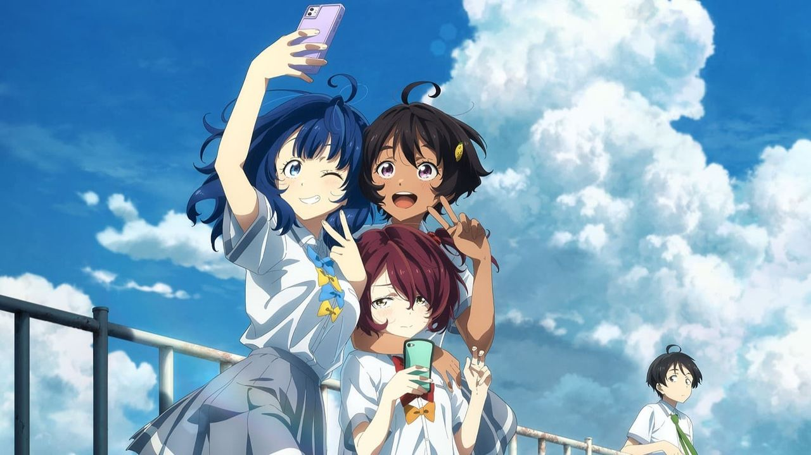
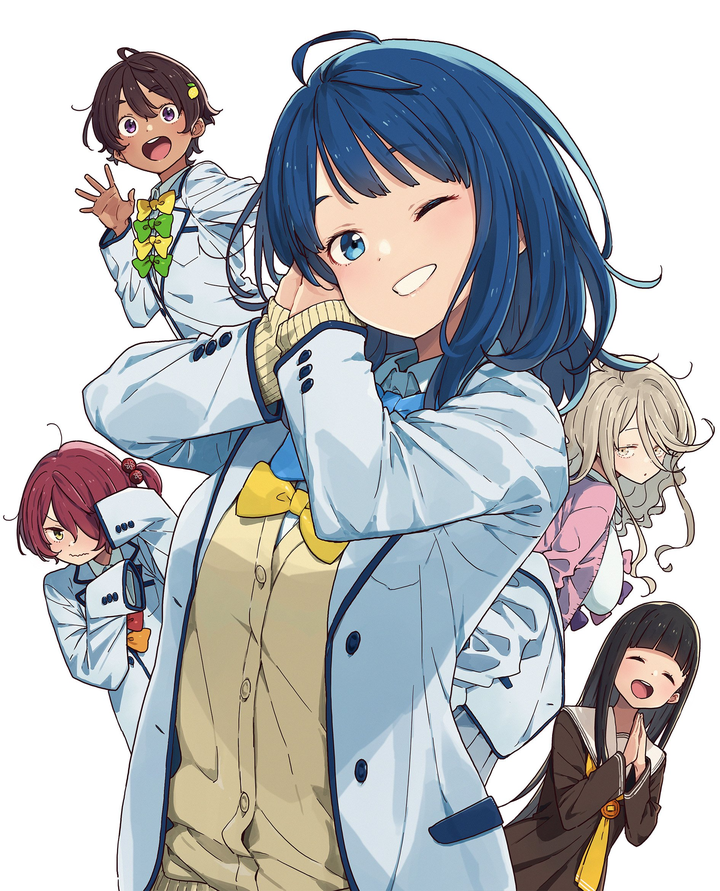
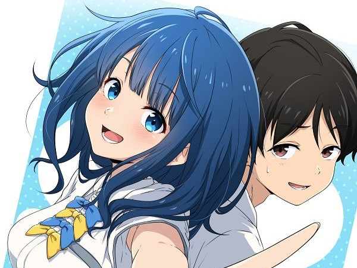
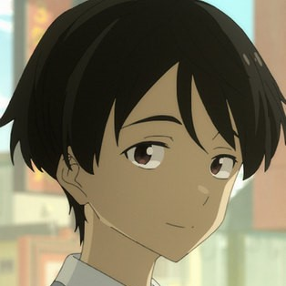
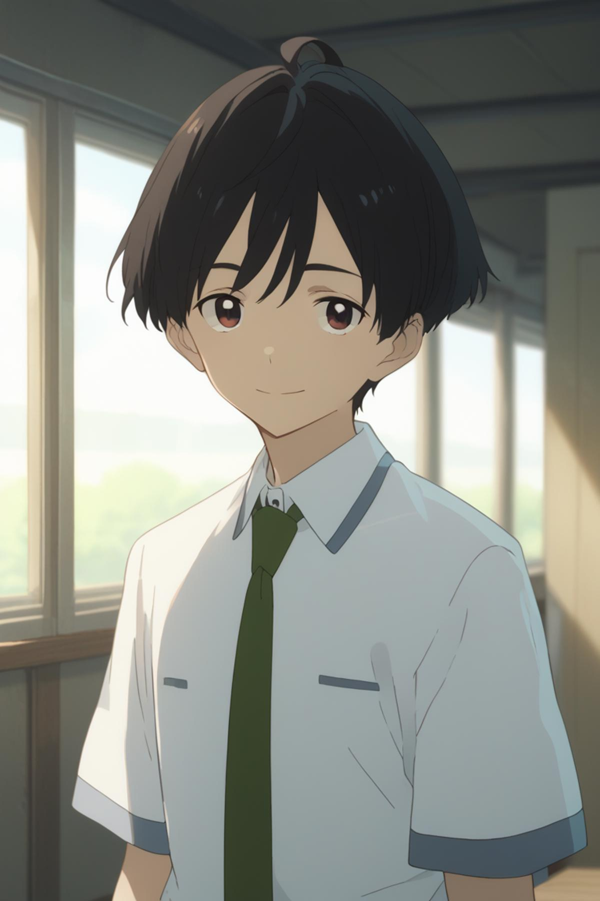
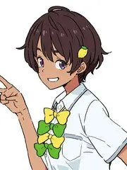
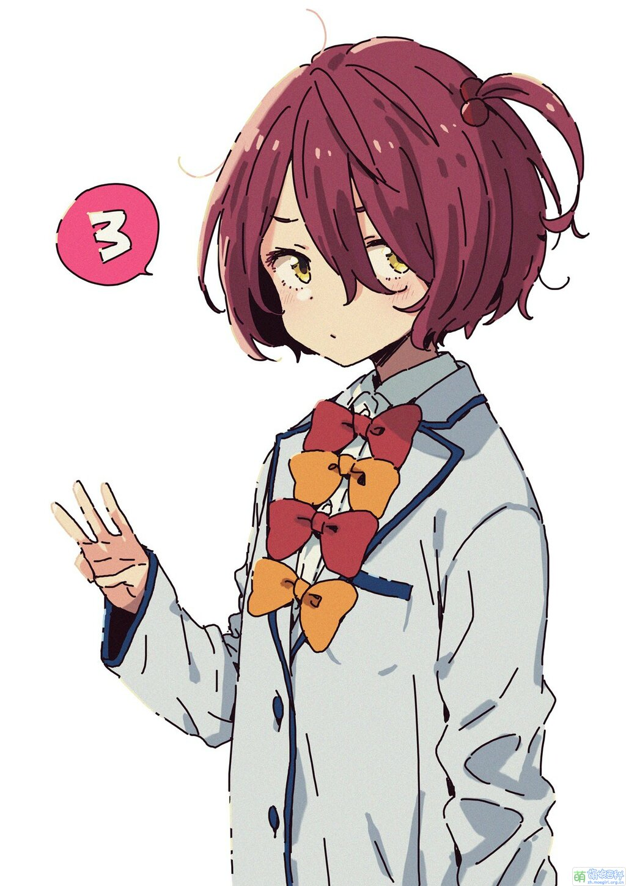

Main Characters
やなみ あんな YANAMI
Major heroine of the series. A very pretty and kind high school student, whose hobby is delicacy cuisines. Be called「負けヒロインが」in Japanese, which means "Loser Heroine". Reason for this is that she has loved a boy for a long time, but she has never been able to confess her feelings until he fell in love with another girl.

ぬくみず かずひこ NUKUMIZU
The

[CHARACTER NAME]
[CHARACTER DESCRIPTION]

[CHARACTER NAME]
[CHARACTER DESCRIPTION]